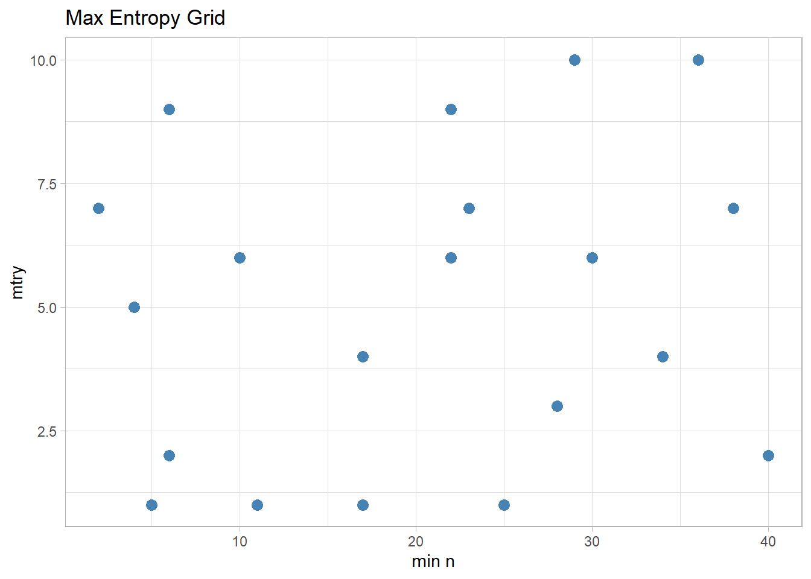
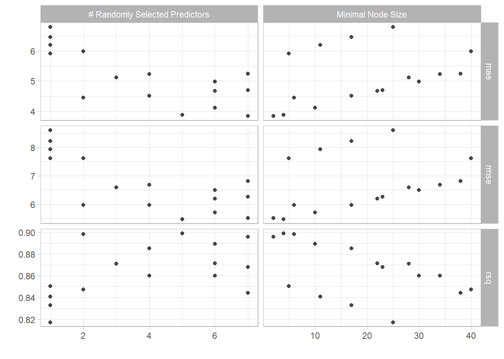
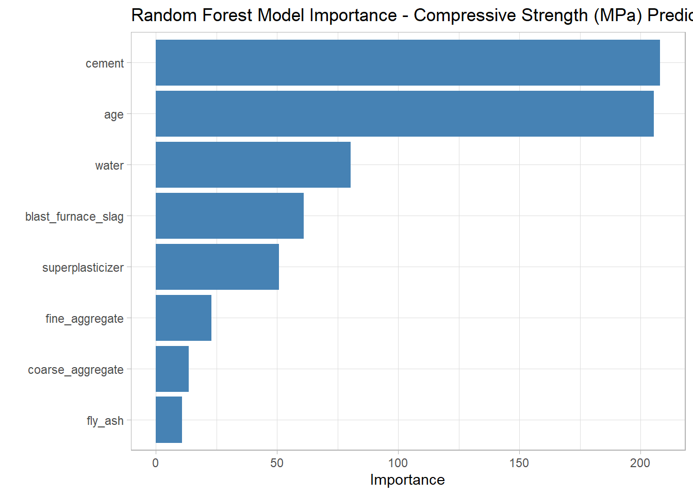
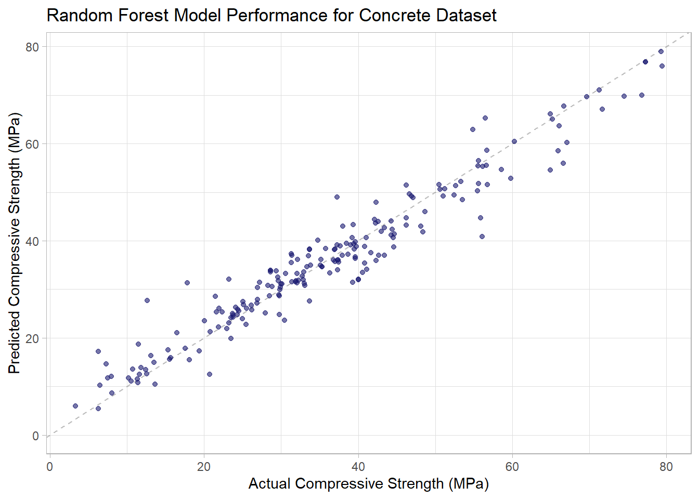

Random Forest Modeling of the Concrete Compressive Strength Dataset
Posted on December 4, 2020
In this post, we will begin to use machine learning techniques for predicting compressive strength of formulations using the concrete dataset. In a previous post, we created a model using a conventional material modeling approach which resulted in an R2 of 0.78. Here we will use a random forest model to predict compressive strength and compare the results with the conventional material model.
Initial splitting of the dataset into Training and Test Dataset Here we use the rsample package to create an 80/20 split. The concrete dataset contains 1030 formulations of which 825 are randomly assigned to training and 205 are randomly assigned to testing.
set.seed(123)
concrete_split <- initial_split(concrete_tbl, prop = 0.80)
concrete_train <- training(concrete_split)
concrete_test <- testing(concrete_split)
Preprocessing is accomplished by using the recipe package. The recipe provides the steps required to transform our raw data into a dataset suitable for machine learning. The Concrete dataset actually doesn’t require much reformatting. The major issue was the lengthy column names which was addressed immediately after the dataset was imported. The dataset contained all numerical values and no missing data. Initially we will just center and scale the predictors before sending to the nnet model.
concrete_rec <- recipe(compressive_strength ~ ., data = concrete_train) %>%
step_center(all_predictors()) %>%
step_scale(all_predictors())
concrete_rec
## Data Recipe
##
## Inputs:
##
## role #variables
## outcome 1
## predictor 8
##
## Operations:
##
## Centering for all_predictors()
## Scaling for all_predictors()
Cross validation folds are created in order to assess the performance of the model parameters. Here we use 5-fold cross validation to create splits from our training dataset and also using the preprocessing pipeline specified above.
set.seed(234)
concrete_folds <- vfold_cv(concrete_train, v = 5)
concrete_folds
## # 5-fold cross-validation
## # A tibble: 5 x 2
## splits id
## <list> <chr>
## 1 <split [660/165]> Fold1
## 2 <split [660/165]> Fold2
## 3 <split [660/165]> Fold3
## 4 <split [660/165]> Fold4
## 5 <split [660/165]> Fold5
Model specifications are created using the parsnip package. Here we specify a random forest model using the ranger engine. Notice that the min n and mtry parameters have been specified to be tuned.
rf_spec = rand_forest(
trees = 1000,
min_n = tune(),
mtry = tune()
) %>%
set_engine("ranger") %>%
set_mode("regression")
rf_spec
## Random Forest Model Specification (regression)
##
## Main Arguments:
## mtry = tune()
## trees = 1000
## min_n = tune()
##
## Computational engine: ranger
Grid specifications sets up a variety of parameter values used with our model to find which combination yields the lowest prediction error (or best accuracy). Here we specify the parameter ranges and grid function using the dials package.
Specify the grid function (max entropy, hypercube etc.). Here we make a grid of 20 values using the grid_max_entropy() function in the dials package. Since there are just 2 tuning parameters in this case, we can visualize the grid selections. Note the penalty parameter is on the log base 10 scale by default. The dials package helps us make smarter choices for the critical tuning parameters.
set.seed(345)
rf_grid <- grid_max_entropy(min_n(), mtry(c(1L, 10L)), size = 20)
rf_grid %>%
ggplot(aes(min_n, mtry)) +
geom_point(color = "steelblue", size = 3) +
#scale_x_log10() +
theme_light() +
labs(title = "Max Entropy Grid", x = "min n", y = "mtry")

Define a workflow for the tuning process
concrete_wf <- workflow() %>%
add_recipe(concrete_rec) %>%
add_model(rf_spec)
Hyperparameter tuning is now performed using the tune_grid() function from the tune package. Here we specific the formula, model, resamples, grid and metrics. The metrics come from the yardstick package. For regression problems, we can specify multiple metrics such as mae, mape, rmse and rsq into a metric_set().
doParallel::registerDoParallel()
set.seed(456)
begin <- Sys.time()
rf_res <- tune_grid(
concrete_wf,
resamples = concrete_folds,
grid = rf_grid,
metrics = metric_set(rmse, rsq, mae),
control = control_grid(save_pred = TRUE)
)
end1 <- Sys.time() - begin
Stage 2: Compare and Select the Best Model
Identify the best hyperparameter values using the show_best() function.
rf_res %>% show_best("mae", n = 5)
## # A tibble: 5 x 8
## mtry min_n .metric .estimator mean n std_err .config
## <int> <int> <chr> <chr> <dbl> <int> <dbl> <chr>
## 1 7 2 mae standard 3.84 5 0.148 Model01
## 2 5 4 mae standard 3.88 5 0.134 Model14
## 3 6 10 mae standard 4.11 5 0.128 Model09
## 4 2 6 mae standard 4.44 5 0.0987 Model16
## 5 4 17 mae standard 4.51 5 0.110 Model20
Visualize the tuning results

Select the best parameters based on the lowest mean absolute error.
params_rf_best <- rf_res %>% select_best("mae")
params_rf_best
## # A tibble: 1 x 3
## mtry min_n .config
## <int> <int> <chr>
## 1 7 2 Model01
Finalize workflow with the best model parameters
final_rf <- finalize_workflow(concrete_wf, params_rf_best)
final_rf
## == Workflow ====================================================================
## Preprocessor: Recipe
## Model: rand_forest()
##
## -- Preprocessor ----------------------------------------------------------------
## 2 Recipe Steps
##
## * step_center()
## * step_scale()
##
## -- Model -----------------------------------------------------------------------
## Random Forest Model Specification (regression)
##
## Main Arguments:
## mtry = 7
## trees = 1000
## min_n = 2
##
## Computational engine: ranger
Which Features are most important? For random forest, we are defining the importance measure as permutation which requires a new specification since including this calculation in the initial specification would slow down the tuning process.
imp_spec <- rf_spec %>%
finalize_model(params_rf_best) %>%
set_engine("ranger", importance = "permutation")
workflow() %>%
add_recipe(concrete_rec) %>%
add_model(imp_spec) %>%
fit(data = concrete_train) %>%
pull_workflow_fit() %>%
vip(aesthetics = list(fill = "steelblue")) +
labs(title = "Random Forest Model Importance - Compressive Strength (MPa) Prediction")

Stage 3: Train Final Model
Fit model on train and evaluate on test.
final_res <- last_fit(final_rf, concrete_split, metrics = metric_set(rmse, rsq, mae))
Assess final model performance metrics.
collect_metrics(final_res)
## # A tibble: 3 x 3
## .metric .estimator .estimate
## <chr> <chr> <dbl>
## 1 rmse standard 4.19
## 2 rsq standard 0.938
## 3 mae standard 2.99
Visualize actual vs. predicted compressive strength for final model.

LS0tDQpvdXRwdXQ6IA0KICBodG1sX2RvY3VtZW50Og0KICAgIGNvZGVfZG93bmxvYWQ6IHRydWUNCiAgICBpbmNsdWRlczoNCiAgICAgIGFmdGVyX2JvZHk6IGZvb3Rlci5odG1sDQotLS0NCjxicj4NCmBgYHtyIHNldHVwLCBpbmNsdWRlPUZBTFNFfQ0Ka25pdHI6Om9wdHNfY2h1bmskc2V0KGVjaG8gPSBUUlVFKQ0KYGBgDQoNCmBgYHtyLCBpbmNsdWRlPUZBTFNFfQ0KbGlicmFyeShrbml0cikNCmxpYnJhcnkocmVhZHhsKQ0KbGlicmFyeSh0aWR5dmVyc2UpDQoNCiNUaWR5bW9kZWxzDQpsaWJyYXJ5KHRpZHltb2RlbHMpDQpsaWJyYXJ5KHZpcCkNCmBgYA0KDQojIyAqKlJhbmRvbSBGb3Jlc3QgTW9kZWxpbmcgb2YgdGhlIENvbmNyZXRlIENvbXByZXNzaXZlIFN0cmVuZ3RoIERhdGFzZXQqKg0KKlBvc3RlZCBvbiBEZWNlbWJlciA0LCAyMDIwKg0KDQpJbiB0aGlzIHBvc3QsIHdlIHdpbGwgYmVnaW4gdG8gdXNlIG1hY2hpbmUgbGVhcm5pbmcgdGVjaG5pcXVlcyBmb3IgcHJlZGljdGluZyBjb21wcmVzc2l2ZSBzdHJlbmd0aCBvZiBmb3JtdWxhdGlvbnMgdXNpbmcgdGhlIGNvbmNyZXRlIGRhdGFzZXQuICBJbiBhIHByZXZpb3VzIHBvc3QsIHdlIGNyZWF0ZWQgYSBtb2RlbCB1c2luZyBhIGNvbnZlbnRpb25hbCBtYXRlcmlhbCBtb2RlbGluZyBhcHByb2FjaCB3aGljaCByZXN1bHRlZCBpbiBhbiBSXjJeIG9mIDAuNzguICBIZXJlIHdlIHdpbGwgdXNlIGEgcmFuZG9tIGZvcmVzdCBtb2RlbCB0byBwcmVkaWN0IGNvbXByZXNzaXZlIHN0cmVuZ3RoIGFuZCBjb21wYXJlIHRoZSByZXN1bHRzIHdpdGggdGhlIGNvbnZlbnRpb25hbCBtYXRlcmlhbCBtb2RlbC4NCg0KYGBge3IsIGluY2x1ZGU9RkFMU0V9DQpmaWxlbmFtZSA8LSAiQ29uY3JldGVfRGF0YS54bHMiDQoNCmZvbGRlciA8LSAiLi9kYXRhLyINCm51bWJlckNvbHMgPC0gOSAjdG90YWwgbnVtYmVyIG9mIGNvbHVtbnMgaW4gc3ByZWFkc2hlZXQNCg0KY29sVHlwZXMgPC0gcmVwKCJudW1lcmljIiwgbnVtYmVyQ29scykNCmNvbmNyZXRlX3RibCA8LSByZWFkX2V4Y2VsKHBhdGggPSBwYXN0ZTAoZm9sZGVyLCBmaWxlbmFtZSksIGNvbF90eXBlcyA9IGNvbFR5cGVzKQ0KDQpjb25jcmV0ZV90YmwgPC0gY29uY3JldGVfdGJsICU+JQ0KICByZW5hbWUoY2VtZW50ID0gc3RhcnRzX3dpdGgoIkNlbWVudCIpKSAlPiUNCiAgcmVuYW1lKGJsYXN0X2Z1cm5hY2Vfc2xhZyA9IHN0YXJ0c193aXRoKCJCbGFzdCIpKSAlPiUNCiAgcmVuYW1lKGZseV9hc2ggPSBzdGFydHNfd2l0aCgiRmx5IEFzaCIpKSAlPiUNCiAgcmVuYW1lKHdhdGVyID0gc3RhcnRzX3dpdGgoIldhdGVyIikpICU+JQ0KICByZW5hbWUoc3VwZXJwbGFzdGljaXplciA9IHN0YXJ0c193aXRoKCJTdXBlciIpKSAlPiUNCiAgcmVuYW1lKGNvYXJzZV9hZ2dyZWdhdGUgPSBzdGFydHNfd2l0aCgiQ29hcnNlIikpICU+JQ0KICByZW5hbWUoZmluZV9hZ2dyZWdhdGUgPSBzdGFydHNfd2l0aCgiRmluZSIpKSAlPiUNCiAgcmVuYW1lKGFnZSA9IHN0YXJ0c193aXRoKCJBZ2UiKSkgJT4lDQogIHJlbmFtZShjb21wcmVzc2l2ZV9zdHJlbmd0aCA9IHN0YXJ0c193aXRoKCJDb25jcmV0ZSIpKQ0KYGBgDQoNCkluaXRpYWwgc3BsaXR0aW5nIG9mIHRoZSBkYXRhc2V0IGludG8gVHJhaW5pbmcgYW5kIFRlc3QgRGF0YXNldCAgSGVyZSB3ZSB1c2UgdGhlIHJzYW1wbGUgcGFja2FnZSB0byBjcmVhdGUgYW4gODAvMjAgc3BsaXQuICBUaGUgY29uY3JldGUgZGF0YXNldCBjb250YWlucyAxMDMwIGZvcm11bGF0aW9ucyBvZiB3aGljaCA4MjUgYXJlIHJhbmRvbWx5IGFzc2lnbmVkIHRvIHRyYWluaW5nIGFuZCAyMDUgYXJlIHJhbmRvbWx5IGFzc2lnbmVkIHRvIHRlc3RpbmcuDQpgYGB7cn0NCnNldC5zZWVkKDEyMykNCmNvbmNyZXRlX3NwbGl0IDwtIGluaXRpYWxfc3BsaXQoY29uY3JldGVfdGJsLCBwcm9wID0gMC44MCkNCmNvbmNyZXRlX3RyYWluIDwtIHRyYWluaW5nKGNvbmNyZXRlX3NwbGl0KQ0KY29uY3JldGVfdGVzdCA8LSB0ZXN0aW5nKGNvbmNyZXRlX3NwbGl0KQ0KYGBgDQoNClByZXByb2Nlc3NpbmcgaXMgYWNjb21wbGlzaGVkIGJ5IHVzaW5nIHRoZSByZWNpcGUgcGFja2FnZS4gIFRoZSByZWNpcGUgcHJvdmlkZXMgdGhlIHN0ZXBzIHJlcXVpcmVkIHRvIHRyYW5zZm9ybSBvdXIgcmF3IGRhdGEgaW50byBhIGRhdGFzZXQgc3VpdGFibGUgZm9yIG1hY2hpbmUgbGVhcm5pbmcuICBUaGUgQ29uY3JldGUgZGF0YXNldCBhY3R1YWxseSBkb2Vzbid0IHJlcXVpcmUgbXVjaCByZWZvcm1hdHRpbmcuICBUaGUgbWFqb3IgaXNzdWUgd2FzIHRoZSBsZW5ndGh5IGNvbHVtbiBuYW1lcyB3aGljaCB3YXMgYWRkcmVzc2VkIGltbWVkaWF0ZWx5IGFmdGVyIHRoZSBkYXRhc2V0IHdhcyBpbXBvcnRlZC4gIFRoZSBkYXRhc2V0IGNvbnRhaW5lZCBhbGwgbnVtZXJpY2FsIHZhbHVlcyBhbmQgbm8gbWlzc2luZyBkYXRhLiAgSW5pdGlhbGx5IHdlIHdpbGwganVzdCBjZW50ZXIgYW5kIHNjYWxlIHRoZSBwcmVkaWN0b3JzIGJlZm9yZSBzZW5kaW5nIHRvIHRoZSBubmV0IG1vZGVsLg0KYGBge3J9DQpjb25jcmV0ZV9yZWMgPC0gcmVjaXBlKGNvbXByZXNzaXZlX3N0cmVuZ3RoIH4gLiwgZGF0YSA9IGNvbmNyZXRlX3RyYWluKSAlPiUNCiAgc3RlcF9jZW50ZXIoYWxsX3ByZWRpY3RvcnMoKSkgJT4lDQogIHN0ZXBfc2NhbGUoYWxsX3ByZWRpY3RvcnMoKSkNCg0KY29uY3JldGVfcmVjDQpgYGANCg0KQ3Jvc3MgdmFsaWRhdGlvbiBmb2xkcyBhcmUgY3JlYXRlZCBpbiBvcmRlciB0byBhc3Nlc3MgdGhlIHBlcmZvcm1hbmNlIG9mIHRoZSBtb2RlbCBwYXJhbWV0ZXJzLiAgSGVyZSB3ZSB1c2UgNS1mb2xkIGNyb3NzIHZhbGlkYXRpb24gdG8gY3JlYXRlIHNwbGl0cyBmcm9tIG91ciB0cmFpbmluZyBkYXRhc2V0IGFuZCBhbHNvIHVzaW5nIHRoZSBwcmVwcm9jZXNzaW5nIHBpcGVsaW5lIHNwZWNpZmllZCBhYm92ZS4NCmBgYHtyfQ0Kc2V0LnNlZWQoMjM0KQ0KY29uY3JldGVfZm9sZHMgPC0gdmZvbGRfY3YoY29uY3JldGVfdHJhaW4sIHYgPSA1KQ0KDQpjb25jcmV0ZV9mb2xkcw0KYGBgDQoNCk1vZGVsIHNwZWNpZmljYXRpb25zIGFyZSBjcmVhdGVkIHVzaW5nIHRoZSBwYXJzbmlwIHBhY2thZ2UuICBIZXJlIHdlIHNwZWNpZnkgYSByYW5kb20gZm9yZXN0IG1vZGVsIHVzaW5nIHRoZSByYW5nZXIgZW5naW5lLiAgTm90aWNlIHRoYXQgdGhlIG1pbiBuIGFuZCBtdHJ5IHBhcmFtZXRlcnMgaGF2ZSBiZWVuIHNwZWNpZmllZCB0byBiZSB0dW5lZC4gIA0KDQpgYGB7cn0NCnJmX3NwZWMgPSByYW5kX2ZvcmVzdCgNCiAgdHJlZXMgPSAxMDAwLA0KICBtaW5fbiA9IHR1bmUoKSwNCiAgbXRyeSA9IHR1bmUoKQ0KKSAlPiUNCiAgc2V0X2VuZ2luZSgicmFuZ2VyIikgJT4lDQogIHNldF9tb2RlKCJyZWdyZXNzaW9uIikNCg0KcmZfc3BlYw0KYGBgDQoNCkdyaWQgc3BlY2lmaWNhdGlvbnMgc2V0cyB1cCBhIHZhcmlldHkgb2YgcGFyYW1ldGVyIHZhbHVlcyB1c2VkIHdpdGggb3VyIG1vZGVsIHRvIGZpbmQgd2hpY2ggY29tYmluYXRpb24geWllbGRzIHRoZSBsb3dlc3QgcHJlZGljdGlvbiBlcnJvciAob3IgYmVzdCBhY2N1cmFjeSkuICBIZXJlIHdlIHNwZWNpZnkgdGhlIHBhcmFtZXRlciByYW5nZXMgYW5kIGdyaWQgZnVuY3Rpb24gdXNpbmcgdGhlIGRpYWxzIHBhY2thZ2UuDQoNClNwZWNpZnkgdGhlIGdyaWQgZnVuY3Rpb24gKG1heCBlbnRyb3B5LCBoeXBlcmN1YmUgZXRjLikuICBIZXJlIHdlIG1ha2UgYSBncmlkIG9mIDIwIHZhbHVlcyB1c2luZyB0aGUgZ3JpZF9tYXhfZW50cm9weSgpIGZ1bmN0aW9uIGluIHRoZSBkaWFscyBwYWNrYWdlLiAgU2luY2UgdGhlcmUgYXJlIGp1c3QgMiB0dW5pbmcgcGFyYW1ldGVycyBpbiB0aGlzIGNhc2UsIHdlIGNhbiB2aXN1YWxpemUgdGhlIGdyaWQgc2VsZWN0aW9ucy4gIE5vdGUgdGhlIHBlbmFsdHkgcGFyYW1ldGVyIGlzIG9uIHRoZSBsb2cgYmFzZSAxMCBzY2FsZSBieSBkZWZhdWx0LiAgVGhlIGRpYWxzIHBhY2thZ2UgaGVscHMgdXMgbWFrZSBzbWFydGVyIGNob2ljZXMgZm9yIHRoZSBjcml0aWNhbCB0dW5pbmcgcGFyYW1ldGVycy4NCmBgYHtyfQ0Kc2V0LnNlZWQoMzQ1KQ0KcmZfZ3JpZCA8LSBncmlkX21heF9lbnRyb3B5KG1pbl9uKCksIG10cnkoYygxTCwgMTBMKSksIHNpemUgPSAyMCkNCg0KcmZfZ3JpZCAlPiUNCiAgZ2dwbG90KGFlcyhtaW5fbiwgbXRyeSkpICsNCiAgZ2VvbV9wb2ludChjb2xvciA9ICJzdGVlbGJsdWUiLCBzaXplID0gMykgKw0KICAjc2NhbGVfeF9sb2cxMCgpICsNCiAgdGhlbWVfbGlnaHQoKSArDQogIGxhYnModGl0bGUgPSAiTWF4IEVudHJvcHkgR3JpZCIsIHggPSAibWluIG4iLCB5ID0gIm10cnkiKQ0KYGBgDQoNCkRlZmluZSBhIHdvcmtmbG93IGZvciB0aGUgdHVuaW5nIHByb2Nlc3MNCmBgYHtyfQ0KY29uY3JldGVfd2YgPC0gd29ya2Zsb3coKSAlPiUNCiAgYWRkX3JlY2lwZShjb25jcmV0ZV9yZWMpICU+JQ0KICBhZGRfbW9kZWwocmZfc3BlYykNCmBgYA0KDQpIeXBlcnBhcmFtZXRlciB0dW5pbmcgaXMgbm93IHBlcmZvcm1lZCB1c2luZyB0aGUgdHVuZV9ncmlkKCkgZnVuY3Rpb24gZnJvbSB0aGUgdHVuZSBwYWNrYWdlLiAgSGVyZSB3ZSBzcGVjaWZpYyB0aGUgZm9ybXVsYSwgbW9kZWwsIHJlc2FtcGxlcywgZ3JpZCBhbmQgbWV0cmljcy4gIFRoZSBtZXRyaWNzIGNvbWUgZnJvbSB0aGUgeWFyZHN0aWNrIHBhY2thZ2UuIEZvciByZWdyZXNzaW9uIHByb2JsZW1zLCB3ZSBjYW4gc3BlY2lmeSBtdWx0aXBsZSBtZXRyaWNzIHN1Y2ggYXMgbWFlLCBtYXBlLCBybXNlIGFuZCByc3EgaW50byBhIG1ldHJpY19zZXQoKS4NCmBgYHtyLCBjYWNoZSA9IFRSVUV9DQpkb1BhcmFsbGVsOjpyZWdpc3RlckRvUGFyYWxsZWwoKQ0KDQpzZXQuc2VlZCg0NTYpDQoNCmJlZ2luIDwtIFN5cy50aW1lKCkNCg0KcmZfcmVzIDwtIHR1bmVfZ3JpZCgNCiAgY29uY3JldGVfd2YsDQogIHJlc2FtcGxlcyA9IGNvbmNyZXRlX2ZvbGRzLA0KICBncmlkID0gcmZfZ3JpZCwNCiAgbWV0cmljcyA9IG1ldHJpY19zZXQocm1zZSwgcnNxLCBtYWUpLA0KICBjb250cm9sID0gY29udHJvbF9ncmlkKHNhdmVfcHJlZCA9IFRSVUUpDQopDQoNCmVuZDEgPC0gU3lzLnRpbWUoKSAtIGJlZ2luDQpgYGANCg0KIyMjIFN0YWdlIDI6IENvbXBhcmUgYW5kIFNlbGVjdCB0aGUgQmVzdCBNb2RlbA0KDQpJZGVudGlmeSB0aGUgYmVzdCBoeXBlcnBhcmFtZXRlciB2YWx1ZXMgdXNpbmcgdGhlIHNob3dfYmVzdCgpIGZ1bmN0aW9uLg0KYGBge3J9DQpyZl9yZXMgJT4lIHNob3dfYmVzdCgibWFlIiwgbiA9IDUpDQpgYGANClZpc3VhbGl6ZSB0aGUgdHVuaW5nIHJlc3VsdHMgIA0KYGBge3IsIGVjaG8gPSBGQUxTRX0NCmF1dG9wbG90KHJmX3JlcykNCmBgYA0KDQpTZWxlY3QgdGhlIGJlc3QgcGFyYW1ldGVycyBiYXNlZCBvbiB0aGUgbG93ZXN0IG1lYW4gYWJzb2x1dGUgZXJyb3IuDQpgYGB7cn0NCnBhcmFtc19yZl9iZXN0IDwtIHJmX3JlcyAlPiUgc2VsZWN0X2Jlc3QoIm1hZSIpDQpwYXJhbXNfcmZfYmVzdA0KYGBgDQoNCkZpbmFsaXplIHdvcmtmbG93IHdpdGggdGhlIGJlc3QgbW9kZWwgcGFyYW1ldGVycw0KYGBge3J9DQpmaW5hbF9yZiA8LSBmaW5hbGl6ZV93b3JrZmxvdyhjb25jcmV0ZV93ZiwgcGFyYW1zX3JmX2Jlc3QpDQoNCmZpbmFsX3JmDQpgYGANCg0KV2hpY2ggRmVhdHVyZXMgYXJlIG1vc3QgaW1wb3J0YW50PyAgRm9yIHJhbmRvbSBmb3Jlc3QsIHdlIGFyZSBkZWZpbmluZyB0aGUgaW1wb3J0YW5jZSBtZWFzdXJlIGFzIHBlcm11dGF0aW9uIHdoaWNoIHJlcXVpcmVzIGEgbmV3IHNwZWNpZmljYXRpb24gc2luY2UgaW5jbHVkaW5nIHRoaXMgY2FsY3VsYXRpb24gaW4gdGhlIGluaXRpYWwgc3BlY2lmaWNhdGlvbiB3b3VsZCBzbG93IGRvd24gdGhlIHR1bmluZyBwcm9jZXNzLg0KYGBge3J9DQppbXBfc3BlYyA8LSByZl9zcGVjICU+JQ0KICBmaW5hbGl6ZV9tb2RlbChwYXJhbXNfcmZfYmVzdCkgJT4lDQogIHNldF9lbmdpbmUoInJhbmdlciIsIGltcG9ydGFuY2UgPSAicGVybXV0YXRpb24iKQ0KDQp3b3JrZmxvdygpICU+JQ0KICBhZGRfcmVjaXBlKGNvbmNyZXRlX3JlYykgJT4lDQogIGFkZF9tb2RlbChpbXBfc3BlYykgJT4lDQogIGZpdChkYXRhID0gY29uY3JldGVfdHJhaW4pICU+JQ0KICBwdWxsX3dvcmtmbG93X2ZpdCgpICU+JQ0KICB2aXAoYWVzdGhldGljcyA9IGxpc3QoZmlsbCA9ICJzdGVlbGJsdWUiKSkgKw0KICBsYWJzKHRpdGxlID0gIlJhbmRvbSBGb3Jlc3QgTW9kZWwgSW1wb3J0YW5jZSAtIENvbXByZXNzaXZlIFN0cmVuZ3RoIChNUGEpIFByZWRpY3Rpb24iKQ0KYGBgDQoNCiMjIyBTdGFnZSAzOiBUcmFpbiBGaW5hbCBNb2RlbA0KDQpGaXQgbW9kZWwgb24gdHJhaW4gYW5kIGV2YWx1YXRlIG9uIHRlc3QuDQpgYGB7cn0NCmZpbmFsX3JlcyA8LSBsYXN0X2ZpdChmaW5hbF9yZiwgY29uY3JldGVfc3BsaXQsIG1ldHJpY3MgPSBtZXRyaWNfc2V0KHJtc2UsIHJzcSwgbWFlKSkNCmBgYA0KDQpBc3Nlc3MgZmluYWwgbW9kZWwgcGVyZm9ybWFuY2UgbWV0cmljcy4NCmBgYHtyfQ0KY29sbGVjdF9tZXRyaWNzKGZpbmFsX3JlcykNCmBgYA0KDQpWaXN1YWxpemUgYWN0dWFsIHZzLiBwcmVkaWN0ZWQgY29tcHJlc3NpdmUgc3RyZW5ndGggZm9yIGZpbmFsIG1vZGVsLiAgDQpgYGB7ciwgZWNobyA9IEZBTFNFfQ0KY29sbGVjdF9wcmVkaWN0aW9ucyhmaW5hbF9yZXMpICU+JQ0KICBnZ3Bsb3QoYWVzKGNvbXByZXNzaXZlX3N0cmVuZ3RoLCAucHJlZCkpICsNCiAgZ2VvbV9hYmxpbmUoc2xvcGUgPSAxLCBsdHkgPSAyLCBjb2xvciA9ICJncmF5NTAiLCBhbHBoYSA9IDAuNSkgKw0KICBnZW9tX3BvaW50KGFscGhhID0gMC42LCBjb2xvciA9ICJtaWRuaWdodGJsdWUiKSArDQogIHlsaW0oMCwgTkEpICsNCiAgbGFicyh0aXRsZSA9ICJSYW5kb20gRm9yZXN0IE1vZGVsIFBlcmZvcm1hbmNlIGZvciBDb25jcmV0ZSBEYXRhc2V0IiwgDQogICAgICAgeCA9ICJBY3R1YWwgQ29tcHJlc3NpdmUgU3RyZW5ndGggKE1QYSkiLCANCiAgICAgICB5ID0gIlByZWRpY3RlZCBDb21wcmVzc2l2ZSBTdHJlbmd0aCAoTVBhKSIpDQpgYGANCmBgYHtyLCBpbmNsdWRlID0gRkFMU0V9DQojc2F2ZSB0aGUgbWV0cmljcw0KI2NvbGxlY3RfbWV0cmljcyhmaW5hbF9yZXMpICU+JSBtdXRhdGUobW9kZWwgPSAicmYiKSAlPiUgc2F2ZVJEUyhmaWxlID0gInJlc3VsdHMvY29uY3JldGVfcmZfbWV0cmljcy5yZHMiKQ0KDQojZml0IGZpbmFsIG1vZGVsIHdpdGggYWxsIGRhdGEgYW5kIHNhdmUNCiNmaXQoZmluYWxfcmYsIGRhdGEgPSBjb25jcmV0ZV90YmwpICU+JSBzYXZlUkRTKGZpbGUgPSAicmVzdWx0cy9jb25jcmV0ZV9yZl9tb2RlbC5yZHMiKQ0KYGBgDQoNCg==